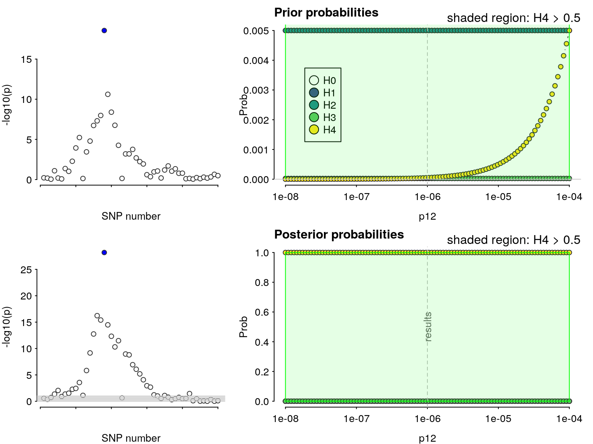
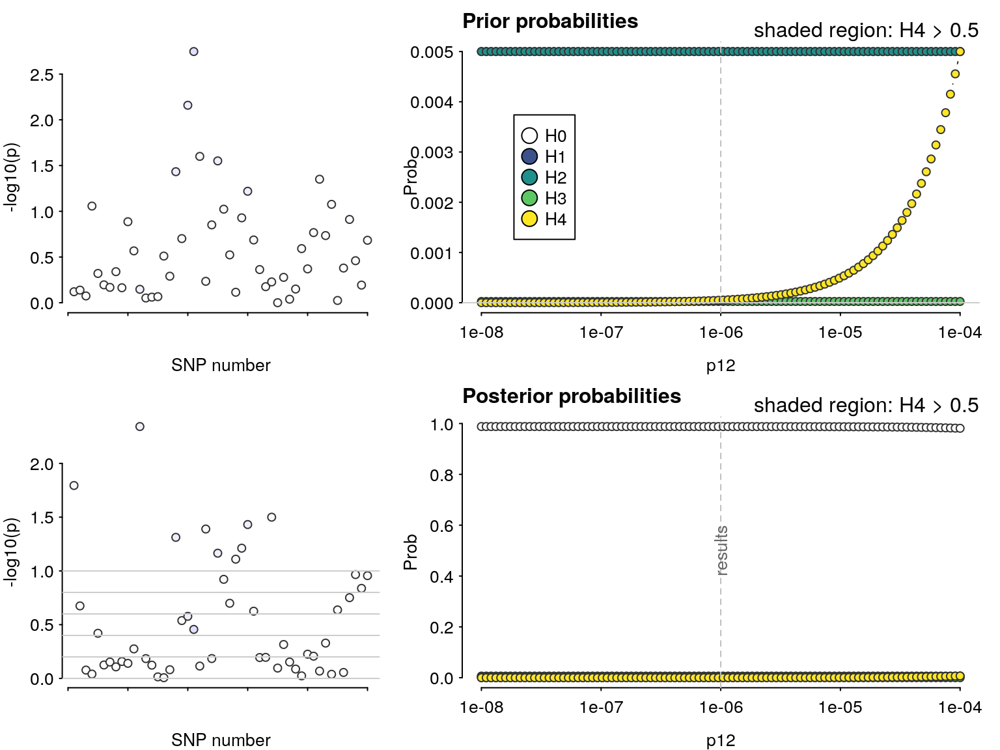

Coloc: sensitivity to prior values
Chris Wallace
2019-07-07
Source:vignettes/sensitivity_04.Rmd
sensitivity_04.Rmd% % % ## Simulate a small dataset
library(mvtnorm)
simx <- function(nsnps,nsamples,S,maf=0.1) {
mu <- rep(0,nsnps)
rawvars <- rmvnorm(n=nsamples, mean=mu, sigma=S)
pvars <- pnorm(rawvars)
x <- qbinom(1-pvars, 2, maf)
}
sim.data <- function(nsnps=50,nsamples=200,causals=floor(nsnps/2),nsim=1) {
cat("Generate",nsim,"small sets of data\n")
ntotal <- nsnps * nsamples * nsim
S <- (1 - (abs(outer(1:nsnps,1:nsnps,`-`))/nsnps))^4
X1 <- simx(nsnps,ntotal,S)
X2 <- simx(nsnps,ntotal,S)
Y1 <- rnorm(ntotal,rowSums(X1[,causals,drop=FALSE]/2),2)
Y2 <- rnorm(ntotal,rowSums(X2[,causals,drop=FALSE]/2),2)
colnames(X1) <- colnames(X2) <- paste("s",1:nsnps,sep="")
df1 <- cbind(Y=Y1,X1)
df2 <- cbind(Y=Y2,X2)
if(nsim==1) {
return(new("simdata",
df1=as.data.frame(df1),
df2=as.data.frame(df2)))
} else {
index <- split(1:(nsamples * nsim), rep(1:nsim, nsamples))
objects <- lapply(index, function(i) new("simdata", df1=as.data.frame(df1[i,]),
df2=as.data.frame(df2[i,])))
return(objects)
}
}
set.seed(46411)
data <- sim.data()## Generate 1 small sets of dataSensitivity analysis
Specifying prior values for coloc.abf() is important, as results can be dependent on these values. Defaults of \(p_1=p_2=10^{-4}\) seem justified in a wide range of scenarios, because these broadly correspond to a 99% belief that there is true association when we see \(p<5\times 10^{-8}\) in a GWAS. However, choice of \(p_{12}\) is more difficult. We hope the coloc explorer app will be helpful in exploring what various choices mean, at a per-SNP and per-hypothesis level. However, having conducted an enumeration-based coloc analysis, it is still helpful to check that any inference about colocalisation is robust to variations in prior values specified.
Continuing on from 03_enumeration, we have
library(coloc)
my.res <- coloc.abf(dataset1=list(beta=b1$beta, varbeta=b1$varbeta, N=nrow(X1),sdY=sd(Y1),type="quant"),
dataset2=list(beta=b2$beta, varbeta=b2$varbeta, N=nrow(X2),sdY=sd(Y2),type="quant"),
MAF=maf,p12=1e-6)## PP.H0.abf PP.H1.abf PP.H2.abf PP.H3.abf PP.H4.abf
## 1.41e-36 2.59e-24 5.47e-15 2.41e-10 1.00e+00
## [1] "PP abf for shared variant: 100%"my.res## $summary
## nsnps PP.H0.abf PP.H1.abf PP.H2.abf PP.H3.abf
## 5.000000e+01 1.413084e-36 2.585470e-24 5.465483e-15 2.410934e-10
## PP.H4.abf
## 1.000000e+00
##
## $results
## snp V.df1 z.df1 r.df1 lABF.df1 V.df2
## 1 SNP.1 0.002248351 0.5101674 0.9756883 -1.73142783 0.002240831
## 2 SNP.10 0.002216572 -0.4229438 0.9760237 -1.77804884 0.002290141
## 3 SNP.11 0.002256274 0.1135572 0.9756047 -1.85039303 0.002267750
## 4 SNP.12 0.002258409 1.7454514 0.9755822 -0.37011724 0.002254242
## 5 SNP.13 0.002253584 0.4475297 0.9756331 -1.75956389 0.002241118
## 6 SNP.14 0.002373830 -0.2061958 0.9743663 -1.81121014 0.002278650
## 7 SNP.15 0.002277719 2.0235830 0.9753786 0.14496383 0.002244983
## 8 SNP.16 0.002345311 1.6705133 0.9746664 -0.47785346 0.002318885
## 9 SNP.17 0.002355946 2.7890767 0.9745545 1.95489680 0.002238614
## 10 SNP.18 0.002380345 3.8519679 0.9742977 5.39755948 0.002236990
## 11 SNP.19 0.002313262 4.5294246 0.9750040 8.15691909 0.002280724
## 12 SNP.2 0.002218556 0.3250072 0.9760028 -1.81336107 0.002296733
## 13 SNP.20 0.002346499 3.5684070 0.9746539 4.36782586 0.002257958
## 14 SNP.21 0.002296588 4.3100797 0.9751797 7.20980626 0.002367878
## 15 SNP.22 0.002290492 5.2138989 0.9752439 11.40653486 0.002326984
## 16 SNP.23 0.002328530 5.4543279 0.9748432 12.65932958 0.002290340
## 17 SNP.24 0.002315421 5.7224136 0.9749812 14.11931158 0.002230718
## 18 SNP.25 0.002320934 8.9776356 0.9749232 37.44549415 0.002193216
## 19 SNP.26 0.002272269 6.6773851 0.9754361 19.89287629 0.002187693
## 20 SNP.27 0.002267481 5.8812387 0.9754865 15.01627016 0.002202258
## 21 SNP.28 0.002216999 5.2241684 0.9760192 11.45347535 0.002197784
## 22 SNP.29 0.002250296 4.0348304 0.9756678 6.08388819 0.002128018
## 23 SNP.3 0.002181928 -0.3514567 0.9763896 -1.81273150 0.002290303
## 24 SNP.30 0.002262298 3.4123437 0.9755412 3.82426189 0.002145053
## 25 SNP.31 0.002250164 3.4144153 0.9756692 3.82928253 0.002148988
## 26 SNP.32 0.002218638 3.7517273 0.9760019 5.00394642 0.002139734
## 27 SNP.33 0.002232329 3.0867450 0.9758574 2.78709373 0.002096668
## 28 SNP.34 0.002256674 2.7540873 0.9756005 1.84336651 0.002135113
## 29 SNP.35 0.002236704 2.5264008 0.9758112 1.25322238 0.002120791
## 30 SNP.36 0.002199390 1.1468268 0.9762052 -1.22718489 0.002153017
## 31 SNP.37 0.002149793 0.7578883 0.9767292 -1.59976492 0.002161713
## 32 SNP.38 0.002225981 1.5917590 0.9759244 -0.62692990 0.002170962
## 33 SNP.39 0.002194572 1.7125057 0.9762560 -0.43869229 0.002165222
## 34 SNP.4 0.002225538 0.4669162 0.9759291 -1.75699358 0.002256109
## 35 SNP.40 0.002200820 1.8464972 0.9761901 -0.20464052 0.002196444
## 36 SNP.41 0.002211155 2.3197382 0.9760809 0.75969681 0.002288362
## 37 SNP.42 0.002214347 1.6891523 0.9760472 -0.47338886 0.002266495
## 38 SNP.43 0.002191942 1.9952936 0.9762838 0.07259012 0.002236402
## 39 SNP.44 0.002199154 1.3828520 0.9762076 -0.93580448 0.002283331
## 40 SNP.45 0.002191796 1.3981612 0.9762854 -0.91658335 0.002288721
## 41 SNP.46 0.002176805 0.2602080 0.9764437 -1.84112527 0.002297642
## 42 SNP.47 0.002122981 0.3517147 0.9770128 -1.82597908 0.002324535
## 43 SNP.48 0.002172939 -0.1407900 0.9764846 -1.86537179 0.002345562
## 44 SNP.49 0.002179537 -0.5589458 0.9764149 -1.72104342 0.002321837
## 45 SNP.5 0.002161220 -0.2858021 0.9766084 -1.83780407 0.002233398
## 46 SNP.50 0.002195664 -0.6658666 0.9762445 -1.65354792 0.002336758
## 47 SNP.6 0.002167510 0.4312465 0.9765420 -1.78546561 0.002210686
## 48 SNP.7 0.002174043 0.7162531 0.9764729 -1.62432730 0.002209486
## 49 SNP.8 0.002174984 1.2132337 0.9764630 -1.15594496 0.002223095
## 50 SNP.9 0.002140028 0.9778754 0.9768325 -1.41545912 0.002243580
## z.df2 r.df2 lABF.df2 internal.sum.lABF SNP.PP.H4
## 1 -1.10376855 0.9758491 -1.2672753 -2.99870311 7.044462e-44
## 2 0.79620230 0.9753307 -1.5419489 -3.31999775 5.108711e-44
## 3 1.29211486 0.9755660 -1.0415072 -2.89190019 7.838478e-44
## 4 2.02125687 0.9757080 0.1343125 -0.23580470 1.116245e-42
## 5 2.61543074 0.9758460 1.4759731 -0.28359083 1.064158e-42
## 6 1.52405058 0.9754515 -0.7206965 -2.53190662 1.123505e-43
## 7 2.02101657 0.9758054 0.1320296 0.27699338 1.864081e-42
## 8 2.17719432 0.9750288 0.4658869 -0.01196658 1.396275e-42
## 9 2.78557687 0.9758724 1.9239117 3.87880852 6.834601e-41
## 10 2.91073206 0.9758895 2.2714907 7.66905023 3.025480e-39
## 11 3.63499500 0.9754297 4.5911601 12.74807919 4.859465e-37
## 12 -1.77020814 0.9752615 -0.3216392 -2.13500022 1.670895e-43
## 13 4.81302492 0.9756690 9.4427864 13.81061223 1.406179e-36
## 14 6.16777332 0.9745147 16.7011385 23.91094478 3.424202e-32
## 15 7.36436814 0.9749438 24.5941942 36.00072906 6.096576e-27
## 16 8.36524654 0.9753286 32.2744006 44.93373020 4.619969e-23
## 17 8.13779553 0.9759554 30.4517747 44.57108629 3.214733e-23
## 18 11.15903157 0.9763501 58.9173051 96.36279924 1.000000e+00
## 19 7.87948196 0.9764083 28.4373275 48.33020376 1.379459e-21
## 20 7.23236585 0.9762549 23.6623496 38.67861979 8.873178e-26
## 21 6.57148436 0.9763020 19.2093290 30.66280436 2.929913e-29
## 22 6.96423899 0.9770370 21.8065169 27.89040512 1.831543e-30
## 23 -1.19165151 0.9753290 -1.1585642 -2.97129575 7.240202e-44
## 24 6.09250043 0.9768574 16.2467305 20.07099241 7.360194e-34
## 25 6.03280953 0.9768160 15.8933606 19.72264314 5.195210e-34
## 26 5.29710269 0.9769135 11.8214993 16.82544573 2.866595e-35
## 27 4.92333045 0.9773676 9.9511090 12.73820276 4.811707e-37
## 28 4.51213603 0.9769622 8.0598586 9.90322512 2.825427e-38
## 29 3.93346257 0.9771132 5.6704125 6.92363487 1.435702e-39
## 30 3.25623150 0.9767735 3.2971551 2.06997020 1.119811e-41
## 31 3.07340575 0.9766819 2.7335195 1.13375456 4.390878e-42
## 32 1.87473676 0.9765845 -0.1610073 -0.78793725 6.426451e-43
## 33 1.64383390 0.9766449 -0.5589305 -0.99762275 5.210819e-43
## 34 -1.02808641 0.9756884 -1.3427685 -3.09976204 6.367346e-44
## 35 1.74658470 0.9763161 -0.3823260 -0.58696648 7.856909e-43
## 36 1.37966583 0.9753494 -0.9231995 -0.16350264 1.199941e-42
## 37 0.67627818 0.9755792 -1.6330690 -2.10645787 1.719274e-43
## 38 0.97540724 0.9758957 -1.3984387 -1.32584855 3.752834e-43
## 39 1.33486156 0.9754023 -0.9835380 -1.91934245 2.073042e-43
## 40 0.96313135 0.9753457 -1.3990250 -2.31560832 1.394801e-43
## 41 1.06785733 0.9752519 -1.2934547 -3.13457994 6.149464e-44
## 42 2.10798086 0.9749695 0.3223488 -1.50363028 3.141591e-43
## 43 0.27434269 0.9747488 -1.8027595 -3.66813125 3.606773e-44
## 44 0.97025628 0.9749978 -1.3854664 -3.10650983 6.324526e-44
## 45 0.07076934 0.9759272 -1.8608935 -3.69869752 3.498196e-44
## 46 -0.21429284 0.9748412 -1.8188910 -3.47243892 4.386387e-44
## 47 0.04417980 0.9761662 -1.8673729 -3.65283855 3.662355e-44
## 48 -0.74654551 0.9761789 -1.5965638 -3.22089107 5.640957e-44
## 49 -0.05128667 0.9760356 -1.8643102 -3.02025518 6.894263e-44
## 50 -0.27773054 0.9758202 -1.8234833 -3.23894242 5.540044e-44
##
## $priors
## p1 p2 p12
## 1e-04 1e-04 1e-06
##
## attr(,"class")
## [1] "coloc_abf" "list"A sensitivity analysis can be used, post-hoc, to determine the range of prior probabilities for which a conclusion is still supported. The sensitivity() function shows this for variable \(p_{12}\) in the bottom right plot, along with the prior probabilities of each hypothesis, which may help decide whether a particular range of \(p_{12}\) is valid. The green region shows the region - the set of values of \(p_{12}\) - for which \(H_4 > 0.5\) - the rule that was specified. In this case, the conclusion of colocalisation looks quite robust. On the left (optionally) the input data are also presented, with shading to indicate the posterior probabilities that a SNP is causal if \(H_4\) were true. This can be useful to indicate serious discrepancies also.
sensitivity(my.res,rule="H4 > 0.5") ## Results pass decision rule H4 > 0.5
Let’s make a smaller dataset where that won’t be the case:
Now, colocalisation is very dependent on the value of \(p_{12}\):
my.res <- coloc.abf(dataset1=list(beta=b1$beta, varbeta=b1$varbeta, N=nrow(X1),sdY=sd(Y1),type="quant"),
dataset2=list(beta=b2$beta, varbeta=b2$varbeta, N=nrow(X2),sdY=sd(Y2),type="quant"),
MAF=maf,p12=1e-6)## PP.H0.abf PP.H1.abf PP.H2.abf PP.H3.abf PP.H4.abf
## 0.988000 0.006300 0.005590 0.000035 0.000069
## [1] "PP abf for shared variant: 0.0069%"my.res## $summary
## nsnps PP.H0.abf PP.H1.abf PP.H2.abf PP.H3.abf
## 5.000000e+01 9.880008e-01 6.302637e-03 5.592583e-03 3.498582e-05
## PP.H4.abf
## 6.902916e-05
##
## $results
## snp V.df1 z.df1 r.df1 lABF.df1 V.df2
## 1 SNP.1 0.09601047 0.307947068 0.5058596 -0.32848214 0.07254550
## 2 SNP.10 0.08205017 0.348579608 0.5450192 -0.36063803 0.06565026
## 3 SNP.11 0.06665601 -0.198808234 0.5958858 -0.44125278 0.07043470
## 4 SNP.12 0.06183372 1.707582897 0.6138318 0.41917633 0.07302892
## 5 SNP.13 0.07035118 0.709113620 0.5828289 -0.29059398 0.07602424
## 6 SNP.14 0.07867763 -0.471740444 0.5554060 -0.34349715 0.07110327
## 7 SNP.15 0.07741178 0.413843096 0.5594075 -0.36191369 0.07408293
## 8 SNP.16 0.07807185 0.743048747 0.5573138 -0.25359459 0.07692073
## 9 SNP.17 0.07976784 0.404750472 0.5520053 -0.35627142 0.06987917
## 10 SNP.18 0.08003320 1.513958834 0.5511839 0.23110539 0.07690850
## 11 SNP.19 0.06799792 1.100855733 0.5910771 -0.08895606 0.07385956
## 12 SNP.2 0.09884939 0.367638087 0.4985749 -0.31145735 0.07595865
## 13 SNP.20 0.07411967 0.141779410 0.5700894 -0.41635917 0.07815565
## 14 SNP.21 0.08064137 -0.165444288 0.5493105 -0.39097047 0.07434613
## 15 SNP.22 0.07169180 0.179207619 0.5782322 -0.42236507 0.08278717
## 16 SNP.23 0.07645384 1.017826218 0.5624742 -0.12195656 0.07471449
## 17 SNP.24 0.08228938 0.654629677 0.5442972 -0.27633068 0.07263553
## 18 SNP.25 0.07948728 2.086735265 0.5528765 0.80128020 0.07012290
## 19 SNP.26 0.07937217 1.284592410 0.5532347 0.05360682 0.06138880
## 20 SNP.27 0.09661982 2.700067013 0.5042781 1.48731487 0.07171398
## 21 SNP.28 0.07893135 3.122418466 0.5546108 2.29918497 0.06514237
## 22 SNP.29 0.07357386 2.239490615 0.5718999 1.00993089 0.05908539
## 23 SNP.3 0.09069108 0.548869972 0.5200986 -0.28874531 0.06372291
## 24 SNP.30 0.08673167 1.472591659 0.5312287 0.19717155 0.05960273
## 25 SNP.31 0.07936499 2.195527394 0.5532571 0.93055777 0.05793273
## 26 SNP.32 0.07482076 1.670112192 0.5677805 0.37243705 0.05945822
## 27 SNP.33 0.07453032 1.037122471 0.5687347 -0.11464387 0.05775067
## 28 SNP.34 0.08205966 0.294991426 0.5449905 -0.37000601 0.05201842
## 29 SNP.35 0.08458405 1.563327006 0.5374674 0.27126372 0.05720478
## 30 SNP.36 0.07219558 1.877821088 0.5765235 0.58684341 0.05254820
## 31 SNP.37 0.07985078 1.264870808 0.5517483 0.04017035 0.06381341
## 32 SNP.38 0.08828031 0.782927278 0.5268192 -0.21267531 0.05788162
## 33 SNP.39 0.07695950 -0.429668435 0.5608512 -0.35968776 0.06078472
## 34 SNP.4 0.09731315 -0.536189859 0.5024906 -0.27683754 0.06085769
## 35 SNP.40 0.08483210 0.001485513 0.5367394 -0.38473213 0.06287425
## 36 SNP.41 0.08260824 0.631442504 0.5433378 -0.28358595 0.07015621
## 37 SNP.42 0.07616120 -0.107074423 0.5634178 -0.41115949 0.07433482
## 38 SNP.43 0.08379753 -0.374083263 0.5397890 -0.35026654 0.07126483
## 39 SNP.44 0.09178555 -1.135885083 0.5171038 -0.03038409 0.07150941
## 40 SNP.45 0.07396764 -0.795387770 0.5705925 -0.24218418 0.07144270
## 41 SNP.46 0.08157074 -1.368836139 0.5464720 0.11661653 0.07919362
## 42 SNP.47 0.08514980 -2.008098189 0.5358098 0.69658488 0.07069126
## 43 SNP.48 0.08512400 -1.327797430 0.5358852 0.08858347 0.08133851
## 44 SNP.49 0.08339339 -1.727915424 0.5409897 0.41827294 0.07491242
## 45 SNP.5 0.08830004 0.070138894 0.5267635 -0.37278427 0.05952555
## 46 SNP.50 0.08314881 -0.810558029 0.5417190 -0.21218053 0.07213387
## 47 SNP.6 0.07964315 1.543027001 0.5523922 0.25568528 0.06244617
## 48 SNP.7 0.07798503 0.940479661 0.5575883 -0.16116320 0.05448208
## 49 SNP.8 0.07399977 0.466052238 0.5704861 -0.36059450 0.06177466
## 50 SNP.9 0.07329767 1.260534436 0.5728205 0.02981525 0.06168747
## z.df2 r.df2 lABF.df2 internal.sum.lABF SNP.PP.H4
## 1 -2.40769790 0.5347647 1.16741197 0.83892983 0.033118244
## 2 -1.24919969 0.5595056 0.02662542 -0.33401261 0.010248608
## 3 -0.20640083 0.5421029 -0.37900830 -0.82026108 0.006302166
## 4 -0.11167908 0.5331120 -0.37750839 0.04166794 0.014921788
## 5 -0.87712058 0.5230949 -0.16899983 -0.45959380 0.009039110
## 6 -0.31849880 0.5397569 -0.36062339 -0.70412054 0.007078301
## 7 0.38032370 0.5295437 -0.33872784 -0.70064153 0.007102970
## 8 -0.27819878 0.5201696 -0.34703211 -0.60062671 0.007850112
## 9 0.39078544 0.5440679 -0.35116246 -0.70743388 0.007054887
## 10 0.35326228 0.5202093 -0.33474306 -0.10363767 0.012903735
## 11 0.62614415 0.5302959 -0.27387317 -0.36282923 0.009957492
## 12 -2.83785547 0.5233102 1.73677474 1.42531739 0.059529494
## 13 0.44809346 0.5161931 -0.31121211 -0.72757128 0.006914241
## 14 0.31505778 0.5286600 -0.34985007 -0.74082054 0.006823237
## 15 0.04095476 0.5018061 -0.34796214 -0.77032720 0.006624847
## 16 -0.01907188 0.5274283 -0.37468700 -0.49664356 0.008710341
## 17 0.21447909 0.5344561 -0.36998166 -0.64631234 0.007499544
## 18 1.97082797 0.5432040 0.66318724 1.46446744 0.061906299
## 19 1.05875768 0.5759746 -0.10615647 -0.05254965 0.013580091
## 20 1.11590520 0.5376317 -0.05095532 1.43635955 0.060190471
## 21 0.93418703 0.5614189 -0.16712858 2.13205638 0.120688262
## 22 -0.29547334 0.5852866 -0.41453473 0.59539616 0.025959838
## 23 -2.04583001 0.5668360 0.76790402 0.47915870 0.023111104
## 24 0.44894537 0.5831690 -0.37876781 -0.18159627 0.011935990
## 25 1.82216422 0.5900604 0.53371087 1.46426864 0.061893993
## 26 1.55565425 0.5837590 0.26812051 0.64055756 0.027159097
## 27 1.28162232 0.5908215 0.03842673 -0.07621714 0.013262458
## 28 1.76371037 0.6158333 0.47948905 0.10948304 0.015968811
## 29 1.87017487 0.5931156 0.58761383 0.85887755 0.033785511
## 30 2.08533223 0.6134332 0.85856575 1.44540916 0.060737643
## 31 1.18249831 0.5664875 -0.02185694 0.01831341 0.014577335
## 32 0.46856674 0.5902739 -0.38133445 -0.59400977 0.007902228
## 33 0.47172702 0.5783879 -0.36748153 -0.72716929 0.006917021
## 34 -2.14879303 0.5780953 0.90313514 0.62629760 0.026774558
## 35 0.25163966 0.5701249 -0.40407943 -0.78881157 0.006503516
## 36 0.70042584 0.5430862 -0.25841219 -0.54199815 0.008324112
## 37 0.38025959 0.5286979 -0.33790387 -0.74906336 0.006767225
## 38 0.22974146 0.5391931 -0.37315848 -0.72342502 0.006942969
## 39 0.06651918 0.5383417 -0.38527412 -0.41565821 0.009445102
## 40 0.53167619 0.5385736 -0.31059453 -0.55277871 0.008234855
## 41 0.49411571 0.5128976 -0.29702840 -0.18041187 0.011950136
## 42 0.18346100 0.5412003 -0.38046291 0.31612198 0.019634269
## 43 0.72382304 0.5062192 -0.22022265 -0.13163918 0.012547423
## 44 -0.10661980 0.5267689 -0.37109157 0.04718137 0.015004286
## 45 -1.19860631 0.5834839 -0.01878197 -0.39156624 0.009675416
## 46 -0.15081847 0.5361801 -0.37803145 -0.59021198 0.007932296
## 47 -1.34880250 0.5717985 0.09604672 0.35173200 0.020346044
## 48 -1.60639358 0.6048287 0.31616236 0.15499916 0.016712445
## 49 -1.45619423 0.5744436 0.18187540 -0.17871910 0.011970382
## 50 -1.59521045 0.5747888 0.30374685 0.33356210 0.019979697
##
## $priors
## p1 p2 p12
## 1e-04 1e-04 1e-06
##
## attr(,"class")
## [1] "coloc_abf" "list"sensitivity(my.res,rule="H4 > 0.5") ## Results fail decision rule H4 > 0.5
In this case, we find there is evidence for colocalisation according to a rule \(H_4>0.5\) only for \(p_{12}>10^{-6}\), which might be less convincing than the situation above. Note, the syntax can also consider more complicated rules:
sensitivity(my.res,rule="H4 > 3*H3 && H0 < 0.1") ## Results fail decision rule H4 > 3*H3 && H0 < 0.1